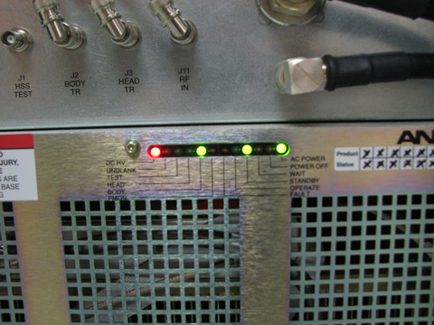
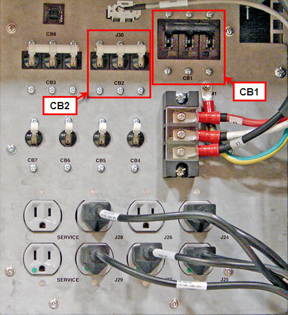

Illustration 4: PEN Cabinet LEDs On (SRPS)

The LOTO procedure involves two physical cabinets and the following steps are split based on the area the service is being performed.
Table 2: Cabinet LOTO
| RF Portion of the PGR Cabinet | PEN Cabinet (including the magnet room electronics) |
| Look at the RF Amplifier LEDs to visually confirm that the AC POWER is on (see Illustration 2). If the LEDs are not on, confirm that the Power Distribution Module has the RF amplifier circuit breaker (CB1 / RF AMP) in the ON position (see Illustration 3). | Look at the PEN Cabinet LEDs to visually confirm that the power
is on (see Illustration 4). If the LEDs are not on, confirm that the Power Distribution Module has the PEN Cabinet circuit breaker (CB2 / PEN CAB) in the ON position (see Illustration 3). |
Illustration 2: RF Amplifier LED’s

Illustration 3: PGR Cabinet Power Distribution Module

| NOTE: | For switches CB1 through CB8, the UP position = ON; the DOWN position = OFF. |
| Switch Label | Switch Description |
| CB1 | Breaker for TM1 (RF Amplifier) |
| CB2 | Breaker for J16 (PEN Cabinet) |
| CB3 | Breaker for J205 (MNS Amplifier) |
| CB4 | Breaker for J24 (ICN-1) and J25 (ICN-2) |
| CB5 | Breaker for J26 (Open), J27 (CAM) and Transformer |
| CB6 | Breaker for J28 (Ethernet switch), J29 (Term Server) and SERVICE |
| CB7 | Breaker for J302 (FUS) |
| CB8 | Breaker for Line clock |
Illustration 4: PEN Cabinet LEDs On (SRPS)